In this example, the project is called Testing. Also, we need to create an empty repository in github. The repository address is https://github.com/Nan0416/intellij.git in our case. After writing a few simple java files, we are ready to push it to github.
Open VCS and choose Enable Version Control Intergration....
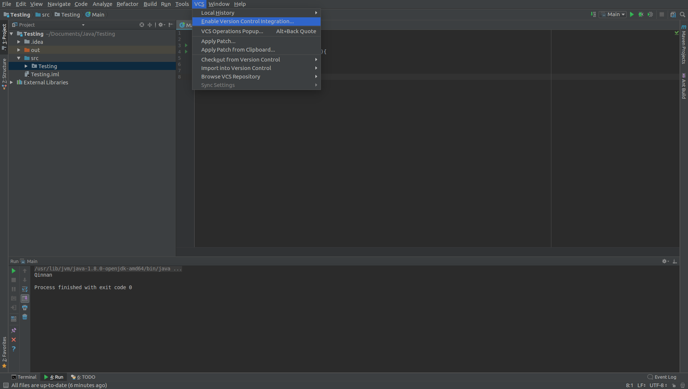
In the dialog, select git.
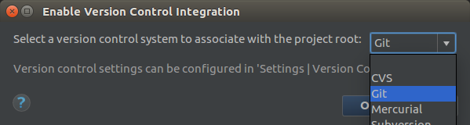
Open VCS menu and choose Git --> Remotes....
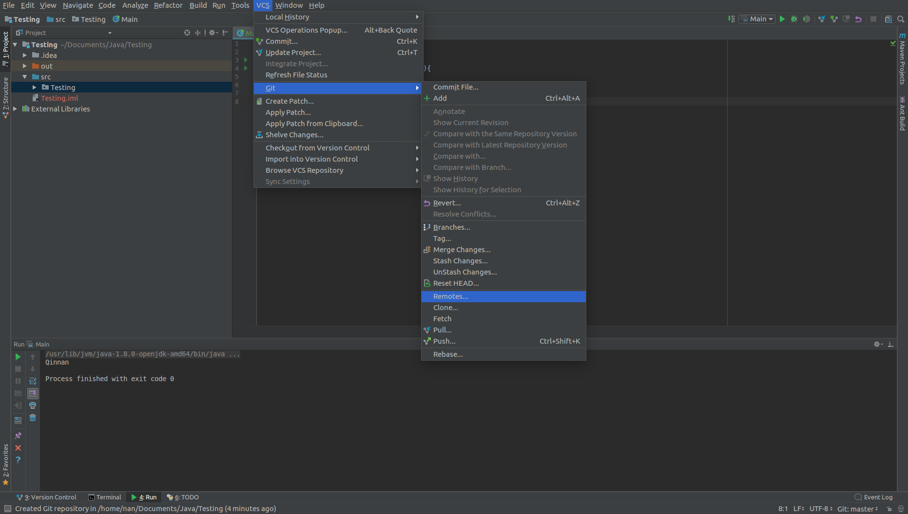
In this dialog, we are going to add the remote git repo address. It is https://github.com/Nan0416/intellij.git in this case. And press OK.
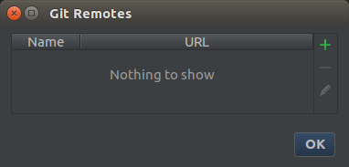
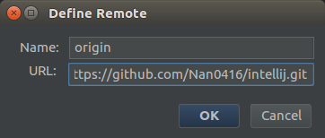
Next, we commit our modifications and push them to github. Open VCS and selectcommit. In the commit dialog, check the Unversioned Files 4 files. This will also make the Intellij supplying files as part of our project, which is useful when you clone this project to an Intellij. In the Commit Message box, input your commit message. Press Commit.
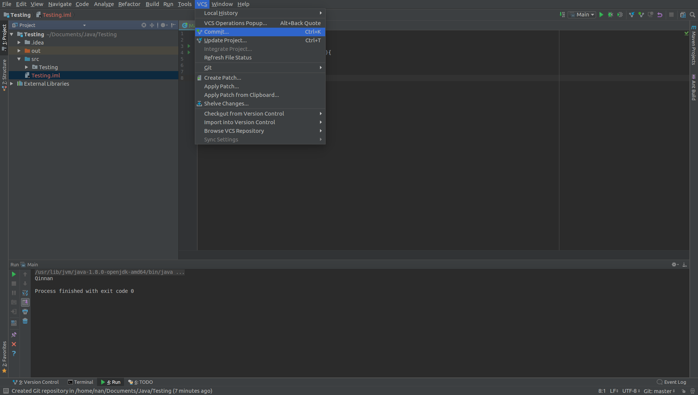
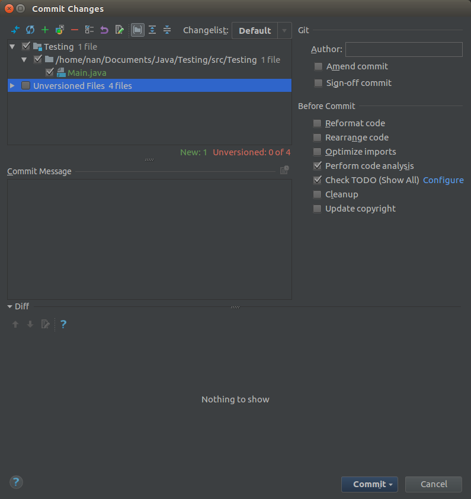
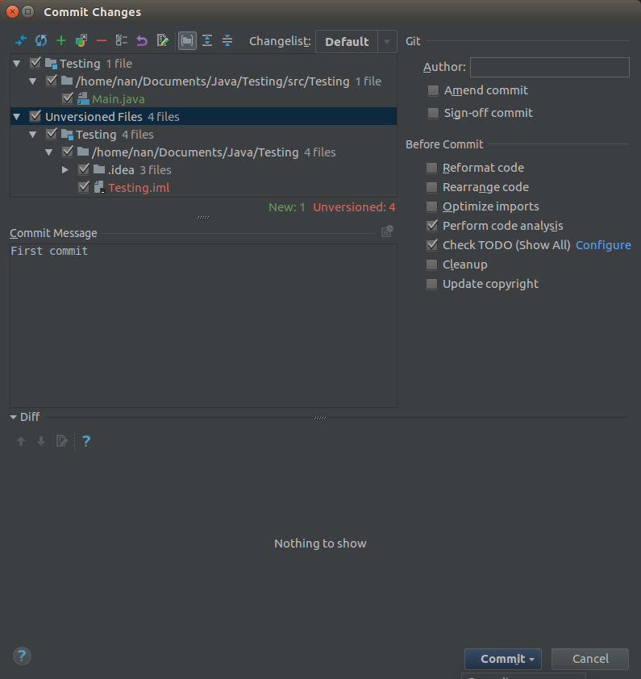
Then pushing this project to github. By selecting VCS --> Git --> Push...
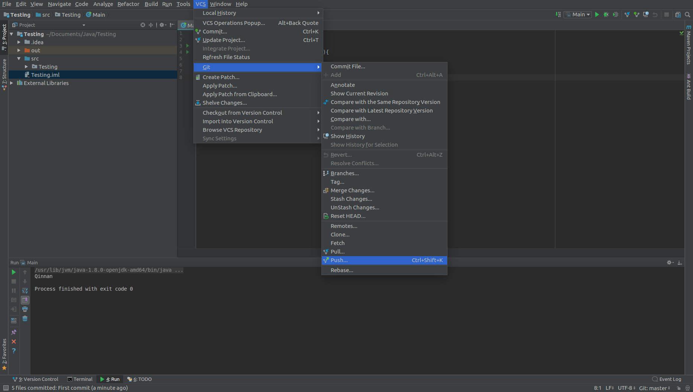
If this is your first push, you will be requested to enter your username and password for accessing this repository after pressing Push. So type your github's username and password before moving forward.
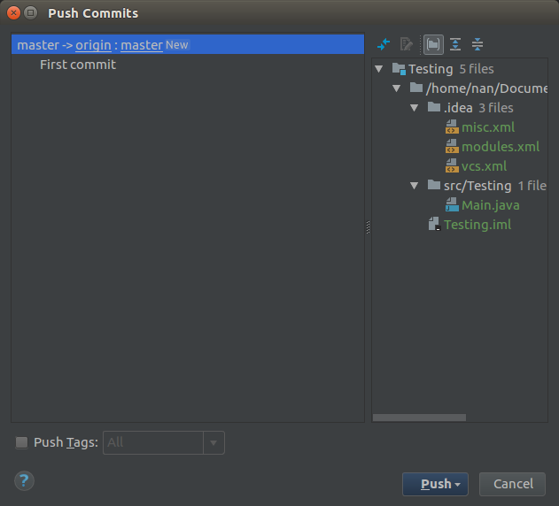
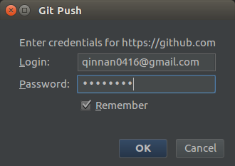